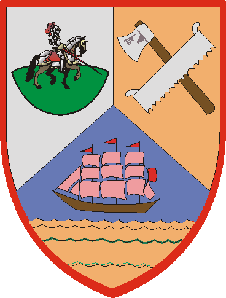

| Übersicht,
Anschläge und Stammtisch (RPG) |
|
Der Scherbe kund und zu wissen (3  ) )
|
| Nalon din Adun (RIP) |
Am heutigen Tag hatte ich die Ehre, Herzog Negus und Gräfin Tatjana Vogelbeere an Bord meines Moloches "Wogenbrecher" willkommen zu heißen.
Grund des Besuches in der Bucht vor Takamatsu war ein sehr erfreulicher:
Herzog Negus und Gräfin Tatjana Vogelbeere gaben sich zur 3. Stunde am 50. Erntemond das Ja-Wort.
Kraft der mir von Bendur und der See vergebenen Rechte als Kapitän, erkläre ich beide zu Mann und Frau.
Lang lebe das Paar!
Herzog Nalon din Adun,
Vorsteher von Trucan,
Anführer der glorreichen Nation "Atha´an Miere",
Ehemann der reizenden Mayandra la Vega,
Herr der Wogen der Atha´an Miere
Zur 3. Stunde am 50.Erntemond im Jahre 425 |
01.08.06 17:01
|
|
| Xardas Dark (RIP) |
und noch Länger
Xardas Dark
Zur 3. Stunde am 50.Erntemond im Jahre 425 |
01.08.06 17:03
|
|
| Ghost Telrùnya (RIP) |
dann entsende ich mal an das paar meine besten glückwünsche zu dieser tat und hoffe das ihre liebe ewig anhält!
Freiherr Ghost Raider,
Vorsteher von Asgards Monument
Zur 5. Stunde am 50.Erntemond im Jahre 425 |
01.08.06 17:30
|
|
| Níniel Fael (RIP) |
Ich möchte natürlich nicht darin nachstehen, meinen Lehnsherren und seiner bald Angetrauten zu dieser Verbindung das Beste zu wünschen.
Freifrau Minuial de Ville,
Anführerin der glorreichen Nation "Schatten des Phönix",
Ehefrau des ehrenwerten Gwydion de Ville
Zur 6. Stunde am 50.Erntemond im Jahre 425 |
01.08.06 17:34
|
|
Turiandor Dragus
  |
Meine Glückwünsche dem Hochzeitspaar.
Möge Eure Ehe duch Glück und Freude gesegnet sein.
Baron Turiandor Dragus,
Vorsteher von Vertana,
Kardinal im Dienste des einzig wahren Glaubens an Pheron
Zur 6. Stunde am 50.Erntemond im Jahre 425 |
01.08.06 17:45
|
|
| Garazgrim (RIP) |
Seitens der Nation Reich der Asgards,
Gratuliere wir den Hochzeitspaar.
Pfalzgraf Garazgrim,
Vorsteher von Asgards Memry,
Anführer der glorreichen Nation "Reich der Asgards"
Zur 7. Stunde am 50.Erntemond im Jahre 425 |
01.08.06 17:53
|
|
Bhaal
  |
Ich Gratuliere dem Brautpaar ebenfalls.
Ein Hoch auf das Paar!
Baron Bhaal,
Vorsteher von Apricus Lacus
Zur 7. Stunde am 50.Erntemond im Jahre 425 |
01.08.06 17:59
|
|
| Hator (RIP) |
Glückwunsch dem Hochzeitspaar. Möge Eure Liebe ewig halten!
Fürst Hator,
Vorsteher von Asgards Hall,
Schmied der Schattenklinge,
Ehemann der reizenden Amyria,
Warlord der Asgards
Zur 9. Stunde am 50.Erntemond im Jahre 425 |
01.08.06 18:26
|
|
| Iczillion von Orcania (RIP) |
Ein Hoch auf das Brautpaar und eine Runde für die gesamte Audienz!
Iczillion von Orcania,
Priester im Dienste des einzig wahren Glaubens an Pheron
Zur 9. Stunde am 50.Erntemond im Jahre 425 |
01.08.06 18:26
|
|
| Eukal der Jeschmeidige (RIP) |
Auch von mir einen herzlichen Glückwunsch!
Sir Volker Racho,
Vorsteher von Zitadelle der Jeschmeidichkeit
Zur 12. Stunde am 50.Erntemond im Jahre 425 |
01.08.06 19:00
|
|
| Itto Ogami (RIP) |
Gratuliere dem jungen Glück.
Drake
Zur 12. Stunde am 50.Erntemond im Jahre 425 |
01.08.06 19:01
|
|
| Nherin von dem Glutwindclan (RIP) |
Ich gratuliere zu dieser hübschen Verbindung und sehe einer ergiebigen gemeinsamen Zukunft entgegen.
Möge sie Freundschaft und Frieden bringen.
Gräfin Nherin von dem Glutwindclan,
Vorsteherin von Akatharsia,
Anführerin der glorreichen Nation "Die Reiter des goldenen Horns"
Zur 12. Stunde am 50.Erntemond im Jahre 425 |
01.08.06 19:07
|
|
| Mort StoHelit (RIP) |
*Hebt ein Krug besten kanubischen Rum*
Auf das Brautpaar und die kanubischen Tanzabende.
So, und wann gibts nun die Feier?
*Freut sich auf das Festagsessen und den nie endenden Strom an Rum*
Freiherr Mort StoHelit,
Vorsteher von Kaltwasser,
Verlobter der reizenden Michéle
Zur 13. Stunde am 50.Erntemond im Jahre 425 |
01.08.06 19:24
|
|
Rian Almaren
  |
Ich gratuliere dem Brautpaar. Ich wünsche beiden alles gute und eine fruchtbare Zukunft.
Baron Rian Almaren,
Vorsteher von Diminuendo,
Anführer der glorreichen Nation "Garde des Silberdrachen",
Ehemann der reizenden Jamari Almaren
Zur 14. Stunde am 50.Erntemond im Jahre 425 |
01.08.06 19:34
|
|
| Eran von Aibheisgârd (RIP) |
Ich wünsche der Braut alles Gute und dem Bräutigam das er eine sehr gute Erklärung dafür hat mich zu den Hochzeitsfeierlichkeiten nicht eingeladen zu haben!
Eran von Aibheisgârd,
Hohepriester im Dienste des einzig wahren Glaubens an Bendur,
Großadmiral der königlichen Flotte a.D.
Zur 15. Stunde am 50.Erntemond im Jahre 425 |
01.08.06 19:44
|
|
| Laurelin of Dórthoníôn (RIP) |
Auch ich möchte meine glückwünsche aussprechen!
Lady Laurelin Carnesîr,
Kardinälin im Dienste des einzig wahren Glaubens an Tura,
Ehefrau des ehrenwerten Aries Carnesîr,
Medicus
Zur 16. Stunde am 50.Erntemond im Jahre 425 |
01.08.06 20:06
|
|
Trevanian
 |
na dann mal meinen herzlichsten Glückwunsch.
Wann ist nochmal die Feier?
Trevanian,
Verlobter der reizenden Falbala
Zur 18. Stunde am 50.Erntemond im Jahre 425 |
01.08.06 20:27
|
|
| Frost (RIP) |
Zu diesem freudigen Ereignis kann man nur gratulieren, ein Hoch auf das Brautpaar, viele glückliche Jahre und zahlreichen Kindersegen wünsche ich!
Frost
Zur 18. Stunde am 50.Erntemond im Jahre 425 |
01.08.06 20:34
|
|
| Aemon (RIP) |
Auch meinerseits die besten Glückwünsche an das Brautpaar.
Ashag Lasidion,
Priester im Dienste des einzig wahren Glaubens an Urvan
Zur 24. Stunde am 50.Erntemond im Jahre 425 |
01.08.06 21:53
|
|
| Lilith (RIP) |
Die besten Wünsche dem Cheffe und seiner reizenden Frau Gemahlin.
Baronesse Lilith,
Vorsteherin von Navisko,
Anführerin der glorreichen Nation "Ordo Ignis"
Zur 1. Stunde am 51.Erntemond im Jahre 425 |
01.08.06 22:00
|
|
William de la Pole
  |
Möge Maki über dieses Paar wachen!
Gratulation
William de la Pole,
Hohepriester im Dienste des einzig wahren Glaubens an Maki,
Anführer der glorreichen Nation "Die purpurne Rose"
Zur 3. Stunde am 51.Erntemond im Jahre 425 |
01.08.06 22:41
|
|
| Malachias (RIP) |
Gratuliere euch beiden auch :)
Baron Zeuss,
Vorsteher von Heraklion
Zur 9. Stunde am 51.Erntemond im Jahre 425 |
02.08.06 0:00
|
|
| Titania Greenleafxxx (RIP) |
Meine Glückwünsche an das Paar, hoffentlich bleibt jetzt noch genug Wein für alle.
Markgräfin Titania Greenleaf,
Vorsteherin von Troja,
Hochmeisterin des Ordens,
Ehefrau der reizenden Sionnach Arolis Greenleaf
Zur 9. Stunde am 52.Erntemond im Jahre 425 |
02.08.06 5:29
|
|
| Tinkerbell de Esperanza (RIP) |
Wer hätte das gedacht, die werte Frau Vogelbeere kommt unter die Haube!
Dem frisch vermählten Paar wünsche ich viel Glück und Makis Segen!
Tinkerbell de Esperanza,
Hohepriesterin im Dienste des einzig wahren Glaubens an Maki,
Verlobte des ehrenwerten William Tifon,
Attemptata Maki
Zur 19. Stunde am 52.Erntemond im Jahre 425 |
02.08.06 7:49
|
|
Sojus Bane
  |
Gratulation und alle guten Wünsche aus dem Süden!
Pfalzgraf Sojus Bane,
Vorsteher von Bengalore,
Anführer der glorreichen Nation "Südliche Allianz",
Ehemann der reizenden Minuiriel O Ithil
Zur 21. Stunde am 52.Erntemond im Jahre 425 |
02.08.06 8:22
|
|
| Inista Joel Montero (RIP) |
Auch ich möchte dem frisch verheiratetem Paar meine besten Glückwünsche aussprechen.
Baron Inista Joel Montero,
Vorsteher von Tor des Nordens,
Waffenmeister des Ordens
Zur 2. Stunde am 53.Erntemond im Jahre 425 |
02.08.06 9:39
|
|
| Jamari Dinuriel (RIP) |
Gratulation dem Brautpaar!
Gräfin Jamari Almaren,
Vorsteherin von Pyr,
Ehefrau des ehrenwerten Rian Almaren
Zur 14. Stunde am 53.Erntemond im Jahre 425 |
02.08.06 12:26
|
|
Artor Draconigena
  |
Herzlichen Glückwunsch an das Brautpaar und alles Gute für die gemeinsame Zukunft.
Markgraf Artor Draconigena,
Vorsteher von Bor Col Somar,
Anführer der glorreichen Nation "Schatten von Scinibe",
Henen Bor Gimu
Zur 17. Stunde am 53.Erntemond im Jahre 425 |
02.08.06 13:09
|
|
| Gregorian von Kazaana (RIP) |
Alles erdenklich Gute für das Paar...
Gregorian von Kazaana,
Priester im Dienste des einzig wahren Glaubens an Bendur,
Arroganter Modefreibeuter
Zur 20. Stunde am 53.Erntemond im Jahre 425 |
02.08.06 13:42
|
|
| Fáin Cortez (RIP) |
Einen herzlichen Glückwunsch auch von mir...
MfG.
Freiherr Fáin Cortez,
Anführer der glorreichen Nation "Freibeuter",
Ehemann der reizenden Isabella Cortez,
El Capitan
Zur 21. Stunde am 53.Erntemond im Jahre 425 |
02.08.06 14:00
|
|
| Yakuun (RIP) |
Von mir gibts keinen Glückwunsch.
Wie kann man nur einen solchen aufgeblasenen Kerl ehelichen?
*von seiner Herrscherin enttäuscht von dannen zieht*
Baron Yakuun Serégorn,
Vorsteher von Waldesruh
Zur 14. Stunde am 54.Erntemond im Jahre 425 |
02.08.06 17:58
|
|
| Frances el Ferror (RIP) |
*beäugt den Zwerg Negus interessiert und flüstert zum baron Serégorn* Meint Ihr wirklich wenn man die heisse Luft rauslässt das er sich dann einfach in Wohlgefallen auflöst?
*laut*
Äh Natürlich auch von mir die herzlichsten Glückwünsche an das hübsche Brautpaar!
*sich fragt ob das bei den Kindern wohl eine besonders haarige Angelegenheit werden wird*
Markgräfin Frances el Ferror,
Vorsteherin von Castello el Ferror,
Leibwichtel Wasils
Zur 10. Stunde am 55.Erntemond im Jahre 425 |
02.08.06 22:42
|
|
Tonja Dragus
  |
Auch von mir die herzlichsten Glückwünsche dem Brautpaar! Möget Ihr glücklich werden und eine erfüllte, wunderbare Zeit miteinander verbringen.
Baronesse Tonja,
Vorsteherin von Sommergarten
Zur 15. Stunde am 55.Erntemond im Jahre 425 |
02.08.06 23:51
|
|
| Negus (RIP) |
Wir danken allen Gratulanten.
Gruß
Herzog Negus,
Vorsteher von Skotos,
Ehemann der reizenden Tatjana Vogelbeere
Zur 5. Stunde am 57.Erntemond im Jahre 425 |
03.08.06 8:43
|
|
| Ruor Grimbart (RIP) |
Hola, ich gratulier euch auch von Herzen.
Lasst es richtig krachen, so wie es sich gehört.
Und wehe da sind in ein paar Monden keine
Jungzwerge zu sehen.
*traurig davon tapst*
Ruor Grimbart,
Veteran des Clan Axtbinder,
Scherbbischer Meister des Schneemannfindens
Zur 16. Stunde am 57.Erntemond im Jahre 425 |
03.08.06 11:13
|
|
| mgrau (RIP) |
*auch noch schnell nen glückwunsch hinterher werf*
Markgraf mgrau,
Vorsteher von Tal en Ithryn
Zur 7. Stunde am 59.Erntemond im Jahre 425 |
03.08.06 20:12
|
|
| Talisus (RIP) |
Gratulation
Talisus
Zur 7. Stunde am 59.Erntemond im Jahre 425 |
03.08.06 20:23
|
|
Das Wiesel
  |
Herzlichen Glückwunsch an das Brautpaar!
Das Wiesel,
Kardinal im Dienste des einzig wahren Glaubens an Pheron
Zur 14. Stunde am 59.Erntemond im Jahre 425 |
03.08.06 22:02
|
|
| Glorfindel von Gondolin (RIP) |
Auch die herzlichsten Glückwünsche aus Albiontar.
Und wieder eine Hoffnung geschwunden. Nur was hat dieser Zwerg was ein Elf nicht hat?
Fürst Glorfindel von Gondolin,
Vorsteher von Albiontar
Zur 24. Stunde am 59.Erntemond im Jahre 425 |
04.08.06 0:17
|
|
| Tatjana Vogelbeere (RIP) |
Haare, in die man sich hineinkuscheln kann Glorfindel..
wie dem auch sei...
.. möchten wir uns auch recht herzlich bei allen Gratulanten bedanken..
Gräfin Tatjana Vogelbeere,
Vorsteherin von Kiekebusch,
Anführerin der glorreichen Nation "Malleus Maleficarum",
Ehefrau des ehrenwerten Negus
Zur 1. Stunde am 60.Erntemond im Jahre 425 |
04.08.06 0:27
|
|
BigHugo
 |
Herzlichen Glückwunsch an das Brautpaar und alles Gute für die gemeinsame Zukunft
Baron BigHugo,
Vorsteher von Romantika Meerum
Zur 24. Stunde am 86.Erntemond im Jahre 425 |
10.08.06 7:34
|
|
| Zynos (RIP) |
Herzlichen Glückwunsch auch von mir und wie von meinem Nationsführer bereits geäußert auch im Namen der gesammten Nation, möge eure Liebe ewig halten und ein wenig mehr Licht und Hoffnung auf der Scherbe verbreiten. Ihr könnt euch wahrlich glücklich schätzen.
Sir Zynos
Zur 16. Stunde am 89.Erntemond im Jahre 425 |
10.08.06 22:30
|
|
| Chivalric (RIP) |
Alles gute Euch beiden...auf daß Euer Glück ewig halte
Chivalric,
Hohepriester im Dienste des einzig wahren Glaubens an Urvan
Zur 1. Stunde am 3.Dunkelfrost im Jahre 425 |
11.08.06 17:27
|
|
Übersicht,
Anschläge und Stammtisch (RPG)
|